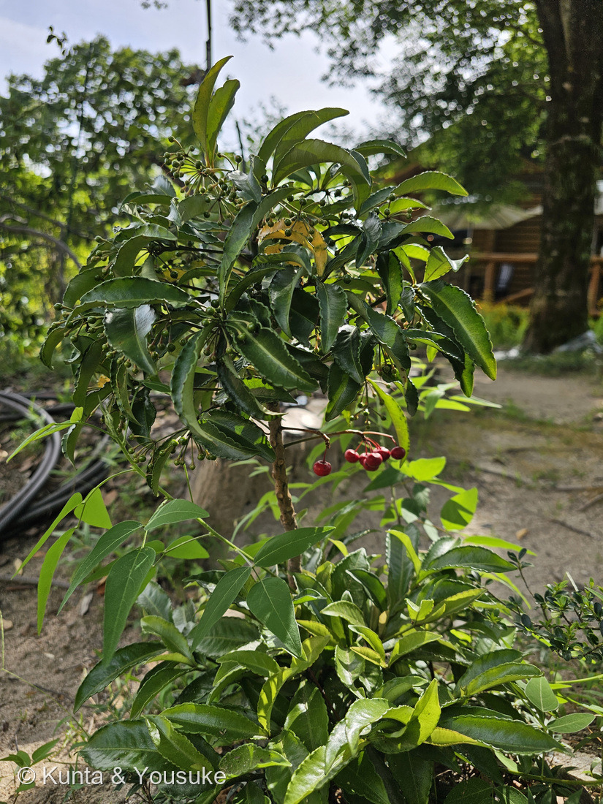
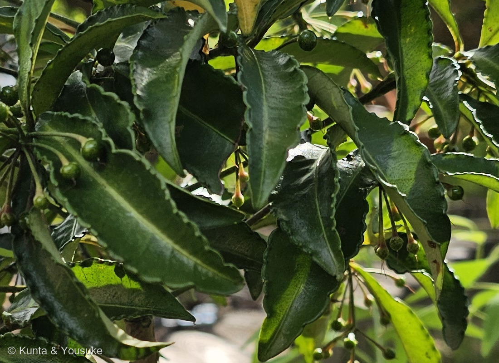
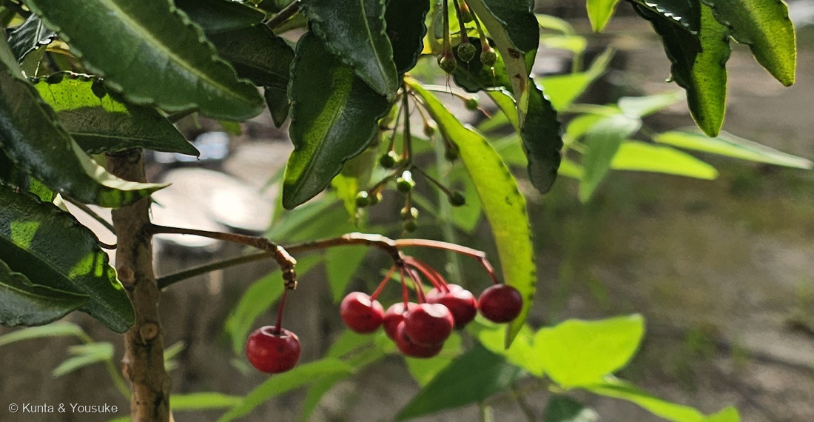
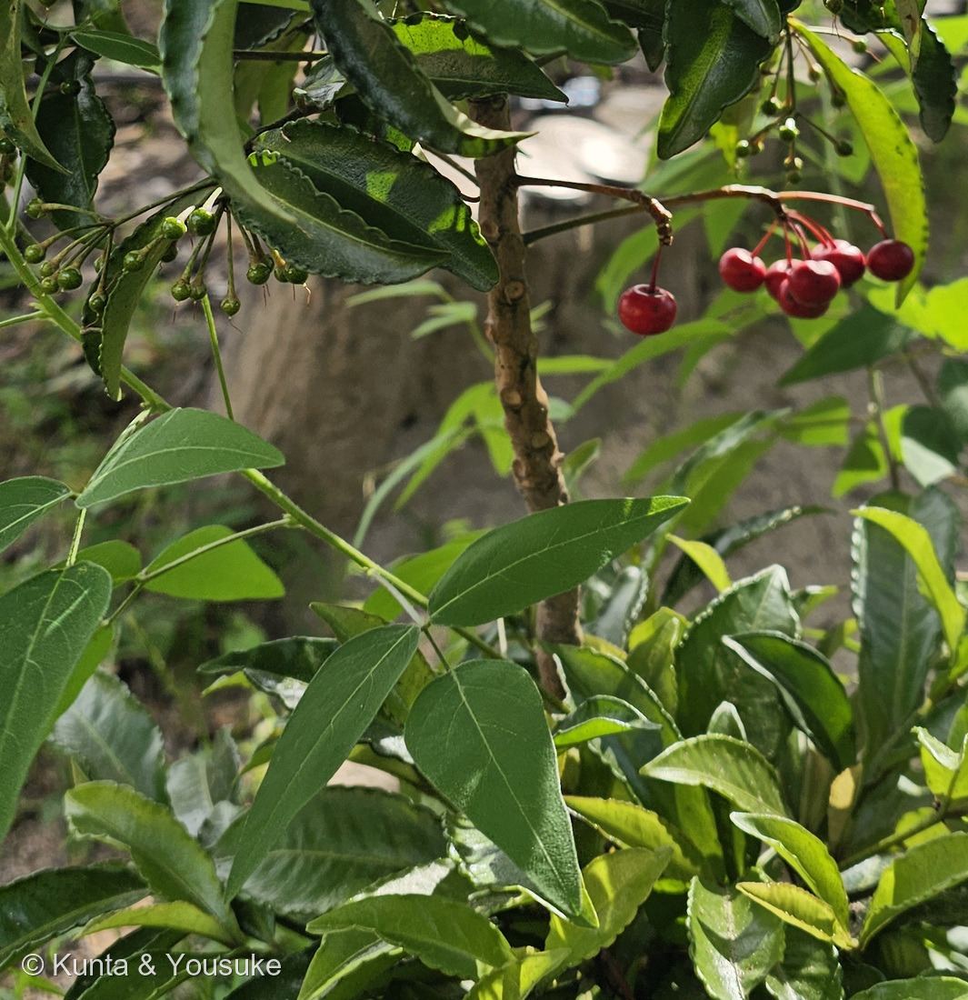

地図を読み込んでいるよ…
🔍 写真も地図も、押しているあいだ拡大して見られるよ（スマホは指を置いてすこし待ってね）。
🌍 の地図＝この子がもともと自生している場所を緑に。日本（茨城県以南の太平洋岸と、鳥取県以南の日本海岸。関東以西から沖縄まで）、朝鮮半島、中国、台湾、インド、東南アジア。暖かい地方の常緑樹林の中、うす暗い林の下に生える。くわしくは下の地図の説明を見てね。
⭐日本の暖かい林の下と、東アジア〜東南アジアの子だよ。三河の植物観察は「本州（関東以西）、四国、九州、沖縄、中国、台湾、インド、マレーシア、フィリピン、ベトナム」とし、熊本大学薬学部薬用植物園は「関東以西〜沖縄、および台湾、朝鮮、中国、東南アジア、インドに分布し、常緑樹林内に生える」とする。⭐⭐日本のぶんは、いちばんくわしい植木ペディアに合わせた＝「日本では茨城県以南の太平洋岸と鳥取県以南の日本海岸に分布する」＝⭐だから、東は茨城県から、日本海側は鳥取県から南だけを塗ったよ（⚠283 タイミンタチバナのときは東京都を塗らなかったけれど、こちらは出典が「茨城県以南の太平洋岸」とはっきり言っているので塗った＝⭐ちがう読み方をしたので、正直に書いておくね）。⚠それでもこの緑は、ほんとうよりずっと広い＝この子はうす暗い常緑樹林の林の下の子だから、県ぜんぶではなく、その中の林の下だと思って見てね。⚠中国の省は、出典が「中国」としか書いていないので、南部のいくつかを塗ったもので、名指しされたわけではないよ。⭐⭐⭐そして、この地図でいちばん大事なのは「アメリカが緑じゃないこと」＝フロリダにいるこの子は、1900年ごろに観賞用として持ちこまれたもの――⚠1995年に侵略的外来種、2014年には有害雑草（noxious weed）に指定されて、許可なく持ちこみ・繁殖・運搬・販売ができなくなった（⭐本文を見てね）。⚠⚠ふるさとの書きかたが、国によってちがう＝アメリカの資料はこの子を「native to southeast China」と書くことが多いけれど、日本の出典ははっきり日本の在来種としている＝⭐この地図は日本の出典のほうに合わせたよ。⭐ぼくらが会ったのは広島市植物公園の一角＝⭐⭐広島県はこの緑の中だから、ふるさとの内側で会ったことになる。⭐同じヤブコウジ属のヤブコウジは、北海道の南部まで届く＝⭐こちらよりずっと北まで行けるんだ。⭐おまけのセンリョウは「東海地方、紀伊半島、四国、九州、沖縄」（三河）＝⚠名前は隣どうしなのに、日本の中ではこちらのほうがせまいよ。
⚠ 地図は国（日本と中国だけ県・省）までしか塗れないから、ほんとうの分布より広く見えていることがあるよ。地図はだいたいの場所。正確なところは、上の文を見てね。
マンリョウ（万両）
Ardisia crenata Sims
学名の意味 · ⭐Ardisia＝ギリシャ語 ardis（槍先）／crenata＝円い鋸歯のある 中国名・生薬名 朱砂根 英名 coral ardisia
サクラソウ科 · Primulaceae（ヤブコウジ属 Ardisia・ヤブコウジ亜科 Myrsinoideae・ツツジ目 Ericales）── ⭐図鑑で3人目のサクラソウ科（147 サクラソウ・283 タイミンタチバナ）／⭐⭐283と同じヤブコウジ亜科＝牧野が「タチバナ」と呼んだ、その本人だよ
燻太さんの言葉「マンリョウは薄暗い林床で、ふと足元を見つめると見かける印象。こんもりした葉っぱの下に、赤い果実が鈴なりになっている。」「画像の緑の若い果実も、いずれ赤くなるのかな？」── ⭐その「葉っぱの下」が、千両と万両を見分ける決め手そのものだったよ
⭐⭐⭐⭐⭐ 名前と学名の由来 ── 「千両より上」というだけの名前
- ⭐この子の名前は、ほかの植物とくらべてできているんだ。──和名マンリョウ（万両）＝「同じように赤い実をつけるセンリョウより美しく価値が高いとして、江戸時代中期以降から万両と称されるようになった」（庭木図鑑 植木ペディア）。⭐つまり、センリョウがいなければ、この名前は生まれなかった。
- ⭐お金の名前をもつ赤い実の子は、ほかにもいる＝百両（カラタチバナ）・十両（ヤブコウジ）・一両（アリドオシ）。⭐この図鑑では 278 ヒドノフィツム・フォルミカルムのおまけで「千両・万両・有り通し」の話をして、283 タイミンタチバナのおまけで十両（ヤブコウジ）を出したよ。
- 属名 Ardisia（アルディシア）＝ギリシャ語の ardis（槍先・矢じり）から。⭐おしべの葯（やく）の先がとがっているところを見た名前だと言われている。／種小名 crenata＝ラテン語で「円い鋸歯のある」＝⭐まさに写真②の波打つ葉のふちのことだよ。
- ⭐中国名は「朱砂根（zhu sha gen）」、英名は coral ardisia／coralberry（三河の植物観察）。⭐日本でも根を「朱砂根（シュシャコン）」という生薬にする（熊本大学薬学部薬用植物園）。
- ⭐⭐⭐⭐⭐そして、この子は283 タイミンタチバナの話の答え合わせでもあるんだ。──牧野富太郎が「大明橘＝明国産のタチバナ（マンリョウ属）」と書いた、そのマンリョウ属の本人が、この子。⭐⭐しかも、いまの分類では同じサクラソウ科の、同じヤブコウジ亜科だよ。
⭐⭐ この植物のこと ── 下の葉を落としながら、まっすぐ伸びる
- 常緑の小低木。⭐高さは「30〜60cm」（三河の植物観察）／「下の葉を落としながら樹高1mくらいになる」（植木ペディア）。
- ⭐⭐写真④を見てね。──茎に、葉が落ちたあとの輪っかのような痕（葉痕）がずらりと並んでいる。⭐この子は枝分かれせずに1本で立ち、下から葉を落としながら伸びていくんだ。
- ⭐だから、燻太さんの言う「こんもりした葉っぱの下に、赤い果実が鈴なり」という姿になる──実をつけた枝が、葉のかたまりより下に取り残されるから。
- 葉は長円形で、長さ(6〜)7〜12(〜15)cm・幅2〜4cm（三河）。花期は7〜8月、花冠は白色で直径約8mm、花序は頂生。果実は球形・赤色・直径約6mm。
- 分布は「茨城県以南の太平洋岸と鳥取県以南の日本海岸」（植木ペディア）＝⭐うす暗い常緑樹林の、林の下。⭐燻太さんの「薄暗い林床で、ふと足元を見つめると見かける印象」は、この子の暮らす場所そのものだよ。
⭐⭐⭐⭐⭐ 燻太さんの質問 ── 緑の実は、赤くなる？
- ⭐答えは「なる」。──植木ペディアは、こう書いている＝「花と実を同時に見ることができるが緑色。寒さが深まるにつれて赤さと光沢を増し11月頃に熟す」。⭐写真の緑の実は、この夏に咲いた花のあとで、これから秋に赤くなるんだ。
- ⭐⭐⭐⭐⭐でも、この写真にはもっと面白いことが写っているよ。──同じ株に、赤い実もついている。撮影は8月8日。花期は7〜8月。⭐だから、この赤い実は今年のものではありえない──⭐⭐これは去年の実なんだ。
- ⭐写真③④を見くらべてほしいな。──赤い実の柄は赤茶色に木化していて、緑の実の柄はまだ緑。⭐そして赤い実がついているのは、葉の落ちた古い枝のほうだよ。
- ⚠⚠赤い実がいつまで残るか、読めた出典が三つに割れた＝三河の植物観察「春まで見られる」／植木ペディア「運が良ければ翌年の2月頃まで枝に残る」／園芸情報のたぐい「鳥などに実が食べられなければ、次の年また実がつく頃までついています」。
- ⭐⭐⭐ぼくらの写真は8月8日。──三つのうち、いちばん長い「次の年また実がつく頃まで」だけが、この写真と合う。⭐ぼくらの1枚が、出典のどれよりも長く残った実の記録になったんだ。
- ⭐⭐同じ株に去年と今年が並ぶ、というのは、この図鑑ではもう何度か出てきた形だよ＝241 クヌギの「春の葉と夏の葉」（ラマス成長）／206 ワタの「白・ピンク・赤褐色が1株に」。⭐一枚の写真の中に、時間が2つぶん入っているんだね。
⭐⭐⭐⭐⭐ 「葉っぱの下に赤い果実」が、そのまま見分けの決め手だった
- ⭐燻太さんが書いてくれた一文──「こんもりした葉っぱの下に、赤い果実が鈴なりになっている。」⭐⭐これ、じつは千両と万両を見分ける決め手そのものなんだ。
- 植木ペディアは、こう書いている＝「センリョウの実は葉の上で穂状に、マンリョウの実は葉の下に隠れるようにできる」。⭐⭐⭐上か、下か。それだけで決まる。──⭐燻太さんは、その決め手を「印象」として持っていたんだよ。
- ⭐⭐⭐⭐⭐そして、ここが283の続きになる。──千両（センリョウ）と万両（マンリョウ）は、名前が隣どうしに並んでいるのに、系統樹ではとんでもなく遠いんだ。
- マンリョウ＝サクラソウ科（Primulaceae）＝真正双子葉類・キク類・ツツジ目。／センリョウ＝センリョウ科（Chloranthaceae）＝センリョウ目（Chloranthales）。⭐⭐真正双子葉類でも単子葉類でもない──被子植物の、ごく初期に分かれた枝なんだ（⭐この科の化石は、いちばん古い被子植物の化石のひとつに数えられている）。
- ⭐⭐⭐⭐283 タイミンタチバナのページで「名前は、収れんの化石」と書いたよね。──⭐千両と万両も、まったく同じことなんだ。⭐⭐「うす暗い林の下で、冬に赤い小さな実をつける」という同じ暮らしかたに、被子植物のいちばん遠い二つの枝がたどりついた。──それを見た人が、お金の名前を並べてつけた。
⭐⭐⭐⭐⭐ 葉のふちの黒い点は、バクテリアの部屋だった
- ⚠写真②の、波の谷に並んでいる黒い点。──日本の図鑑は、これを「腺点」と書く（熊本大学薬学部薬用植物園「波状の歯牙の間には腺点がある」／三河の植物観察「縁は波状の歯があり、歯の間に乳腺があり、透明の点と暗褐色の内側の腺」）。
- ⭐⭐⭐⭐⭐でも、これはただの腺じゃないんだ。──⭐中にバクテリアが住んでいる。この構造は「葉節（leaf nodule）」と呼ばれる。⭐Frontiers in Molecular Biosciences（2021）は「The nodules inhabited by its species-specific endophyte are restricted to the leaf margin」＝この共生菌がいる節は、葉のふちだけにあると書いている。⭐まさに、燻太さんの写真に写っているところだね。
- 住んでいるのは Candidatus Caballeronia crenata（⚠2015年の論文では Ca. Burkholderia crenata と呼ばれていた＝⭐細菌のほうの属の分けかたが変わったんだ）。
- ⭐⭐⭐⭐そして、この共生は絶対的だよ。──「Most host plants are no longer capable of surviving without their endophytes」／「When the symbiotic bacteria are experimentally removed, the plants lose vigor and may ultimately die」（同）＝⭐バクテリアを取りのぞくと、植物は弱って、やがて枯れてしまう。
- ⭐⭐⭐どうやって次の世代へ渡すのか、も分かっている＝「The bacteria are transmitted vertically between host generations by infecting the developing ovule of the developing host-plant seeds」（同）＝⭐育ちかけの胚珠に感染して、種子といっしょに、親から子へ受けわたされるんだ。
- ⭐⭐⭐⭐⭐バクテリアは、薬を作っている。──FR900359 という環状デプシペプチドで、Gqタンパク質を選択的に止める（Angewandte Chemie 2018）。⭐もともとマンリョウの葉から見つかった物質だけれど、作っているのは植物ではなく、中に住むバクテリアのほうだった。⭐⭐そして、この物質が葉を食べる虫への防御として働いていることも、実験で確かめられている。
- ⭐⭐⭐⭐⭐ここで、278 ヒドノフィツム・フォルミカルムとつながるよ。──あの子はアリを幹の中に住まわせて、その落としものから養分をもらっていた。⭐マンリョウはバクテリアを葉のふちに住まわせて、代わりに毒を作ってもらっている。⭐⭐⭐どちらも「体の中に、別の生き物の部屋を用意する」植物なんだ。⚠ちがうのは、マンリョウのほうはその相手がいないと生きていけないところ。
⚠⚠ 日本では縁起物、フロリダでは「持ち込み禁止」
- アメリカのフロリダには、1900年ごろ観賞用として持ちこまれた。⚠1995年に侵略的外来種とされ、2014年には有害雑草（noxious weed）に格上げされた＝許可なく持ちこみ・栽培・運搬・販売ができない（フロリダ大学／フロリダ州農務消費者局）。
- ⚠⚠問題になっているのは、まさに林床＝林の下に侵入して密なかたまりを作り、在来種の多様性を大きく下げるとされる。⭐種は鳥が運ぶ。
- ⭐⭐⭐燻太さんの「薄暗い林床で、ふと足元を見つめると見かける」という風景──⭐日本ではあたりまえの、うす暗い林の下の景色が、フロリダではいちばん困っている風景になっているんだ。
- ⚠アメリカの資料は、この子を「native to southeast China」と書くことが多い＝⚠でも日本の出典は、はっきり日本の在来種としている（三河の植物観察「本州（関東以西）、四国、九州、沖縄…」）。⭐ふるさとの書きかたが、国によってちがっているんだ。⭐地図は、日本の出典のほうに合わせて塗ったよ。
⚠ 同定について ── 名札の無い子を、写真で詰める
- ⚠この株に名札は無かった。⭐名前の出どころは、燻太さんの現場の見立て（「広島市植物公園で、マンリョウを撮影していた」）。⭐現場を見た人の証言は一次資料だよ（088 イキシアで燻太さんが教えてくれたこと）。
- ⭐⭐そのうえで、写真から確かめた決め手が4つ＝①葉のふちが大きくシワシワに波打つ（写真②。⭐植木ペディア「葉は縁がシワシワに波打つのが特徴」）②波の谷に黒い点（腺点）が並ぶ③1本の茎が立ち、下の葉を落として上にだけ葉が集まる（写真④）④赤い球形の実が、葉のかたまりより下にぶら下がり、散形状に10個以上つく（写真①③④）。
- ⚠⚠落としきれなかった相手＝カラタチバナ（百両・Ardisia crispa）。──同じヤブコウジ属で、やはり波状の縁と腺点をもつ。
- ⚠⚠そして、比では決まらなかった。──⭐同じ写真の中で葉の長さと幅の比を測ったら約3.7〜4.7対1（267の目盛りのやりかた）。⚠マンリョウの範囲（長さ7〜12cm×幅2〜4cm）にも、カラタチバナの範囲にも入ってしまう＝⭐だから、この数字は証拠に数えていないよ。
- ⭐証拠を強い順にならべると＝①縁の波の強さ（この属のなかでも、マンリョウがいちばん強い）②実の数の多さ③燻太さんの現場の見立て④場所（園の林床ふうの一角）。⚠④はいちばん弱いので、いちばん最後だよ。
出典：三河の植物観察「マンリョウ」（サクラソウ科 Primulaceae ヤブコウジ属／Ardisia crenata Sims subsp. crenata／中国名 朱砂根 zhu sha gen／英名 coral ardisia, coralberry／本州（関東以西）、四国、九州、沖縄、中国、台湾、インド、マレーシア、フィリピン、ベトナム／高さ30〜60cm／葉は長円形、長さ(6〜)7〜12(〜15)cm×幅2〜4cm／縁は波状の歯があり、歯の間に乳腺(albuminous gland)があり、透明の点と暗褐色の内側の腺(inner glands)／花期は7〜8月／花冠は直径約8mm、白色／花序は頂生／果実は球形、赤色、直径約6mm／秋に真っ赤に熟し、春まで見られる／黄色のものをキミノマンリョウ、白色のものをシロミノマンリョウ）／庭木図鑑 植木ペディア「マンリョウ（万両）」（同じように赤い実をつけるセンリョウより美しく価値が高いとして、江戸時代中期以降から万両と称されるようになった／センリョウの実は葉の上で穂状に、マンリョウの実は葉の下に隠れるようにできる／運が良ければ翌年の2月頃まで枝に残る／花と実を同時に見ることができるが緑色。寒さが深まるにつれて赤さと光沢を増し11月頃に熟す／葉は縁がシワシワに波打つのが特徴／下の葉を落としながら樹高1mくらいになる／日本では茨城県以南の太平洋岸と鳥取県以南の日本海岸に分布する／冬季に赤い実がなる植物で、お金にちなんだものには他に百両、十両、一両がある）／熊本大学薬学部薬用植物園 薬草データベース「マンリョウ」（Ardisia crenata Sims・サクラソウ科／関東以西〜沖縄、および台湾、朝鮮、中国、東南アジア、インドに分布し、常緑樹林内に生える／花期7月／波状の歯牙の間には腺点がある／根または全株を生薬「朱砂根（シュシャコン）」として用い、清熱、解毒、駆瘀血作用がある）／園芸情報のたぐい（実が赤く熟すのは10〜11月／鳥などに実が食べられなければ、次の年また実がつく頃までついています）／Frontiers in Molecular Biosciences（2021）「Dissecting Metabolism of Leaf Nodules in Ardisia crenata and Psychotria punctata」（The nodules inhabited by its species-specific endophyte are restricted to the leaf margin／Candidatus Caballeronia crenata／Most host plants are no longer capable of surviving without their endophytes／When the symbiotic bacteria are experimentally removed, the plants lose vigor and may ultimately die／The bacteria are transmitted vertically between host generations by infecting the developing ovule of the developing host-plant seeds）／Angewandte Chemie International Edition（2018）「Heterologous Expression, Biosynthetic Studies, and Ecological Function of the Selective Gq-Signaling Inhibitor FR900359」（FR900359 はマンリョウの葉から見つかった環状デプシペプチドで、Gqタンパク質を選択的に阻害する／作っているのは葉節の共生細菌／虫に対する防御として働くことが実験で示された）／2015年のゲノム論文（共生細菌を Candidatus Burkholderia crenata として報告し、ゲノムが縮小していること、FR900359 の生合成遺伝子群をもつことを示した）／フロリダ大学／フロリダ州農務消費者局ほか（1900年ごろ観賞用として導入／1995年に侵略的外来種、2014年に noxious weed に指定／許可なく持ちこみ・繁殖・運搬・販売ができない／林床に密なかたまりを作り在来種の多様性を下げる／種子は鳥が運ぶ）／三河の植物観察「センリョウ」（センリョウ科 Chloranthaceae センリョウ属／Sarcandra glabra (Thunb.) Nakai／高さ50〜150cm／花期6〜7月／果期8〜12月／果実は核果、球形、直径3〜5mm、赤色）／英語版Wikipedia「Chloranthaceae」ほか（センリョウ科はセンリョウ目 Chloranthales の唯一の科で4属77種／真正双子葉類でも単子葉類でもなく、被子植物の初期に分かれた系統／この科の化石は最も古い被子植物の化石のひとつ）／⭐この図鑑の 283 タイミンタチバナのページ（牧野「大明橘＝明国産のタチバナ（マンリョウ属）」／名前は収れんの化石／ヤブコウジ亜科 Myrsinoideae）／⭐この図鑑の 278 ヒドノフィツム・フォルミカルムのページ（アリを幹の中に住まわせ、その排泄物から養分を得る／千両・万両・有り通し）